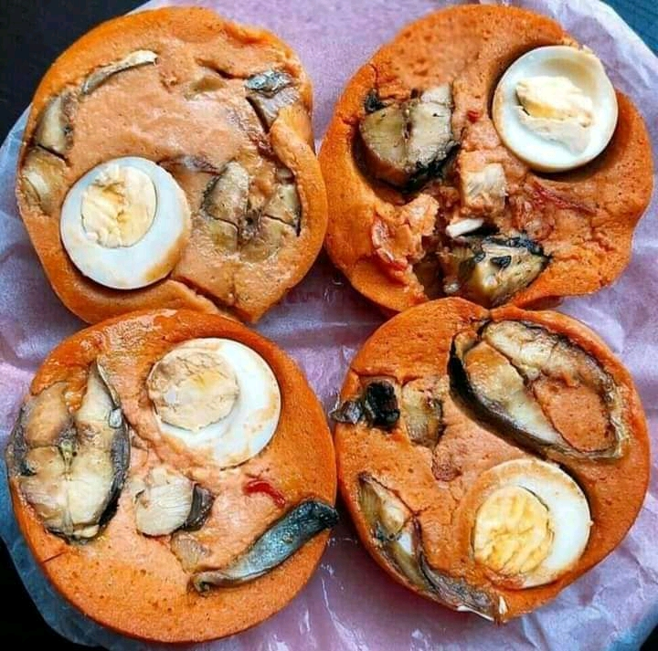

MOI MOI WITH FISH
Moi Moi with Fish is a delicious and nutritious Nigerian dish made with blended beans, fish, and aromatic spices. It's a steamed bean pudding that can be enjoyed as a main dish or side.

Moi Moi with Fish is a delicious and nutritious Nigerian dish made with blended beans, fish, and aromatic spices. It's a steamed bean pudding that can be enjoyed as a main dish or side.